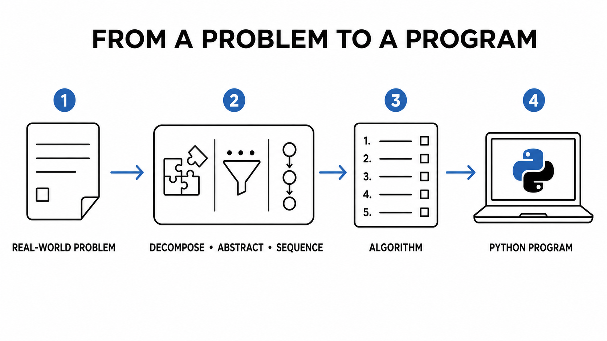
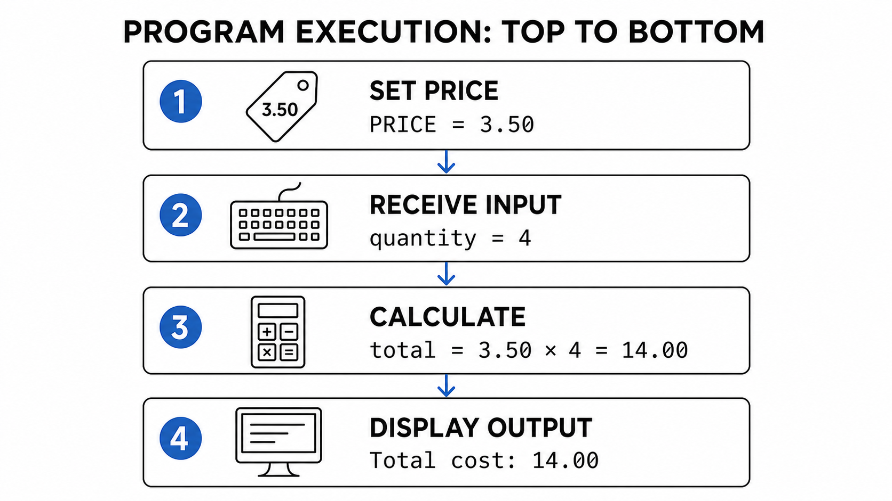
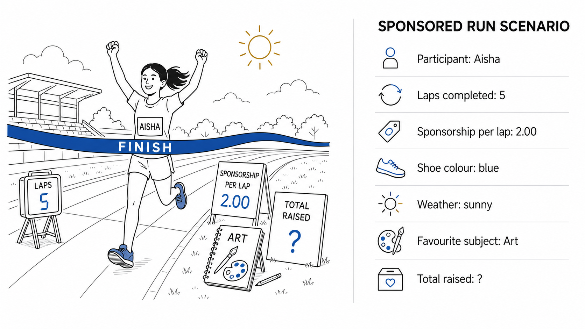
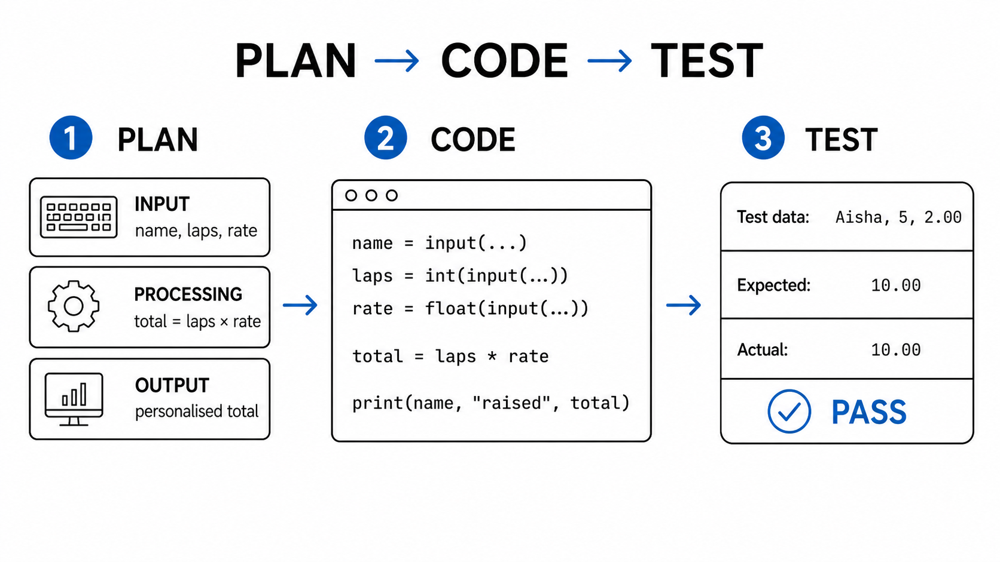
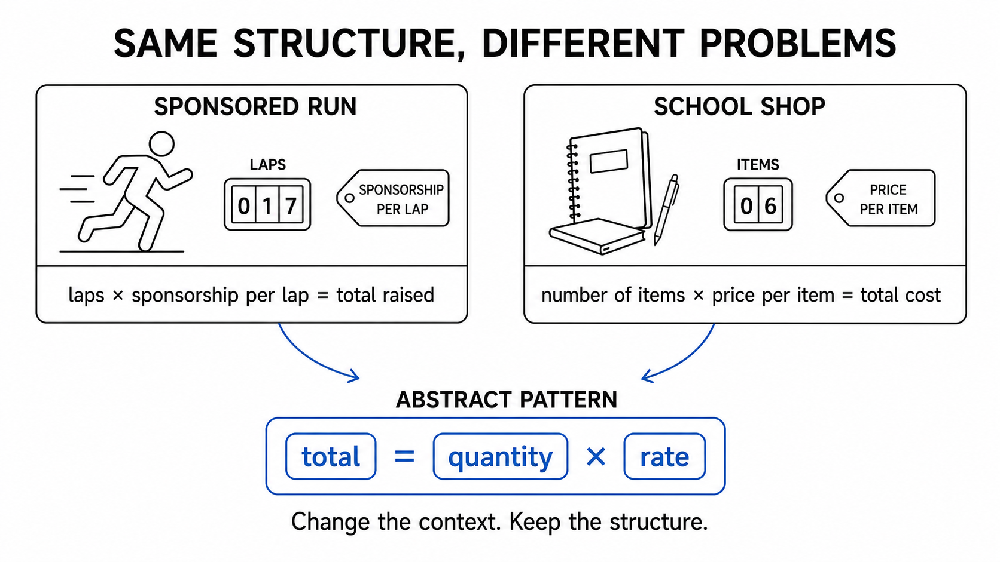

Learn how programmers use sequence, decomposition and abstraction before they begin coding.
Your responses and evidence stay in this browser until you export or clear them. Teacher review: enter teacher as the name.
From Problems to AlgorithmsOverview
0% complete
WAGBA Turning a problem into a precise, ordered and manageable solution.
K key concepts ·S plan and implement ·U explain why structure matters
OVERVIEW · ABOUT 3 MINUTES
Think before you code.
A programmer does not begin with Python. They first decide what the problem is, which information matters, and what order the solution must follow.

WAGBA
What are we getting better at? Turning a problem into a precise, ordered and manageable solution.
By the end of this lesson
You will be able to identify the information a program needs, break a problem into smaller tasks, order the solution and implement it using familiar Python.
Knowledge
Know the meanings of algorithm, sequence, decomposition and abstraction.
Skills
Identify inputs, processing and outputs; remove unnecessary information; order steps; and turn a plan into a short program.
Understanding
Understand that instruction order affects the result and that whether a detail matters depends on the program’s purpose.
Paper 1 habit: analyse a problem before creating or modifying code.
Paper 2 habit: define, apply and explain algorithmic concepts precisely.
Teacher review mode
Every section is unlocked and model answers are visible.
STARTER · PREDICT, RUN, INVESTIGATE · 8 MINUTES
Trace a school-shop calculation.
Act as a program detective: work out what this short checkout program will do before you allow the computer to run it.
YOUR STARTING SCENARIO
A notebook order at the school shop
The school shop sells notebooks for RM3.50 each. The price stays the same during the transaction, but each customer may buy a different quantity. A cashier needs a small program that asks for the quantity, calculates the cost and displays the total to charge.
The program below is one possible solution. Your job is not to rewrite it yet. You are going to trace it: follow each instruction in order and keep track of how the stored values change.
Notice which value is already known before the customer responds.
Pretend the customer enters 4 when the program asks a question.
Follow the calculation using those stored values.
Predict exactly what the final instruction will display.
Important: answer Question 1 without running the code. After making your prediction, use your own Python IDE to test and correct your thinking.
starter.py
PRICE = 3.50
quantity = int(input("How many notebooks? "))
total = PRICE * quantity
print("Total cost:", total)
YOUR TURN
WORKED FEEDBACK
The computer follows the sequence.

Output:Total cost: 14.0 or an equivalent display of fourteen.
If the lines were swapped: the program would try to output total before the value had been calculated.
Why PRICE comes first: a variable or constant must have a value before an expression can use it.
Confirm your corrections:
MAIN ACTIVITY 1 · UNDERSTAND AND ORGANISE · 17 MINUTES · AO1/AO2
Turn a scenario into a plan.
First build the meaning of the three concepts. Then use them to analyse one realistic problem.
READ THIS FIRST
Three decisions made before coding
An algorithm is an ordered set of steps that can be followed to complete a task. A program is an implementation of an algorithm.
Sequence determines the order in which instructions are carried out. Changing that order can change the result or make the solution fail.
Decomposition means breaking a problem into smaller, identifiable tasks. A programmer can plan, implement and test each part more easily.
Abstraction means removing unnecessary detail. A detail is only unnecessary in relation to a particular purpose.
Abstract: keep the price and quantity. The weather and the colour of the shop wall do not affect the calculation.
Decompose: receive the quantity, calculate price × quantity, display the total.
Sequence: input must happen before calculation; calculation must happen before output.
NOW APPLY IT
Design an application for a sponsored run.
THE CLIENT AND THE PROBLEM
Riverside School Charity Run
Riverside School is holding a sponsored run to raise money for a local children’s library. Before the event, runners ask family members, friends, teachers or local businesses to promise an amount of money for every lap they complete. For example, a sponsor might promise RM2.00 per lap.
At the finish desk, a marshal confirms each runner’s completed laps. The charity team then needs to calculate how much that runner has raised. Doing every calculation by hand is slow and could lead to mistakes, so the team has asked you to plan a simple application.
For this first version, the application will record the participant’s name, the number of completed laps and one combined sponsorship rate per lap. It will calculate the total raised and display a clear result for the charity team. It does not need to store sponsor names or payment details.
Example: Aisha completes 5 laps and has sponsorship of RM2.00 per lap. The application should calculate RM10.00 and display a message that connects the total to Aisha.

YOUR DESIGN MISSION
The event poster contains realistic details, but the application only needs information that helps it perform its stated purpose. Work through the four design decisions below in order.
Abstract: decide what the application must keep and what it can ignore.
Justify: explain why removing a detail does not affect the required calculation.
Decompose: break the job into input, processing and output tasks.
Sequence: arrange the smaller tasks so every value exists before it is used.
A successful plan will give another programmer enough information to build the application without guessing what it is supposed to do.
ALGORITHM CLINIC
Teacher model answer
Inputs: name, laps and rate. Output: total raised. Shoes, weather and favourite subject are unnecessary for this purpose. Sequence: name → laps → rate → calculate → display.
MAIN ACTIVITY 2 · PLAN, IMPLEMENT AND TEST · 20 MINUTES · AO2/AO3
Move from algorithm to Python.
You have analysed the charity’s problem and designed its smaller tasks. Now you will translate that thinking into a working application in your own Python IDE.
THE NEXT DEVELOPMENT STAGE
Your plan is the bridge to your code.
In Main Activity 1, you decided what information mattered, split the problem into input, processing and output, and placed those jobs in a sensible sequence. That is your algorithmic design. You should not begin Main Activity 2 by guessing Python statements: translate one planned job at a time.
The application needs text for the participant’s name, a whole number for completed laps and a number that may contain a decimal part for the sponsorship rate. In Python, input() initially returns text, so use int(...) for laps and float(...) for the rate before performing the multiplication.
Build in the same order as your algorithm: receive the inputs, calculate the total, then display the participant’s name and result. Run the program after each meaningful addition. If an error appears, you will know which small part to inspect.
Worked translation: the notebook plan from the starter
Planned input: receive a whole-number quantity → quantity = int(input("How many notebooks? "))
Planned processing: multiply the fixed price by the quantity → total = PRICE * quantity
Planned output: display the calculated cost → print("Total cost:", total)
The sponsored-run program follows the same translation process, but its variable names and prompts must match the charity scenario.

YOUR BUILD BRIEF
Create a file called sponsored_run.py for the Riverside charity team. Your finished application must:
ask for the participant’s name, completed laps and sponsorship rate per lap;
convert the two numerical responses into suitable Python number types;
calculate laps × rate and store the result;
display a clear message containing the participant’s name and total raised;
produce the expected results for all three supplied tests.
You may use the scaffold below or type the program independently. Either way, run the completed code in your own Python IDE; the webpage does not execute Python.
STEP 1 · RECORD YOUR PLAN
Return to the three smaller jobs you identified in Main Activity 1. Rewrite them here precisely so they can guide your Python statements. Include the names of the values and the calculation.
STEP 2 · IMPLEMENT IN YOUR IDE
Open your Python IDE and create sponsored_run.py. Add and run the input statements first. Then add the calculation and run again. Finally add the output. Use this scaffold only if you need support.
sponsored_run.py
name = input("Enter the participant's name: ")
laps = int(input("Enter the number of laps: "))
rate = float(input("Enter the sponsorship per lap: "))
total = ______________________
print(________________________________________)
STEP 3 · TEST
For each row, calculate the expected total yourself before running the program. Enter the supplied values exactly, record the program’s actual output, then choose Pass only when the two results agree. A result of zero is useful because it checks that the calculation handles a participant who completed no laps.
Test data
Expected
Actual
Result
Aisha, 5, 2.00
Daniel, 0, 3.50
Mei, 12, 1.25
Teacher model code and test results
total = laps * rate
print(name, "raised", total)
Expected results: 10.00, 0.00 and 15.00.
EXTENSION · TRANSFER AND GENERALISE · OPTIONAL
Three ways to transfer your thinking.
Choose one challenge first. If you complete it securely, move to another. Each scenario uses the same computational-thinking habits in a different setting.

RECOGNISE THE PATTERN
The story changes; the algorithmic structure can remain.
The sponsored-run application receives a quantity and a rate, multiplies them and displays a total. Programmers often reuse this underlying pattern in a new context, but they must still choose meaningful variable names, prompts and output messages for the new client.
How to work: read the complete scenario before coding. Identify the client, purpose, required information and expected output. Then decompose, sequence, implement and test. Complete at least one challenge if lesson time remains.
CHALLENGE 1 · SUPPORTED TRANSFER
School-shop preorder calculator
The student council lets families preorder supplies before the new term. A staff member enters the product name, price for one item and quantity ordered. The application calculates the item total and displays a short receipt so the family knows how much to pay.
For delivered orders, the school charges one fixed RM4.50 delivery fee, regardless of quantity. Represent this using the named constant DELIVERY_FEE. The fee must be defined before it is used and added during processing before the receipt is displayed.
Example: three pen packs at RM6.00 cost RM18.00 before delivery and RM22.50 after the delivery fee.
CHALLENGE 2 · INDEPENDENT TRANSFER
Library reading-marathon calculator
The school library is running a reading marathon. Supporters promise a particular amount for every book a student finishes during the month. The librarian needs an application that asks for the reader’s name, number of completed books and sponsorship amount per book. It should calculate the total raised and display a clear message for the library’s records.
Example: Hana completes 7 books with sponsorship of RM3.50 per book. Her total should be RM24.50. Build this version without using the supplied sponsored-run scaffold.
CHALLENGE 3 · ADVANCED TRANSFER
Community recycling-points calculator
The eco committee awards points to each house for collecting waste paper. A coordinator enters the house name, kilograms collected and points awarded per kilogram. Every participating house also receives a fixed 25-point starter bonus, represented by STARTER_BONUS.
The event notice also mentions that the collection truck is green and Saturday’s forecast is sunny. Those details make the event description realistic, but consider whether the points application needs them.
Example: Cedar House collects 18.5 kg at 4 points per kilogram. Including the starter bonus, the expected total is 99 points.
Teacher extension guidance
Challenge 1: both programs receive a quantity and rate, multiply them and output a total. Define DELIVERY_FEE = 4.50 before processing, then calculate total = price * quantity + DELIVERY_FEE.
Challenge 2:total = books * rate; Hana’s expected result is 24.50.
Challenge 3: truck colour and weather are unnecessary. Define STARTER_BONUS = 25, then calculate points = kilograms * points_per_kg + STARTER_BONUS; Cedar House’s expected result is 99.